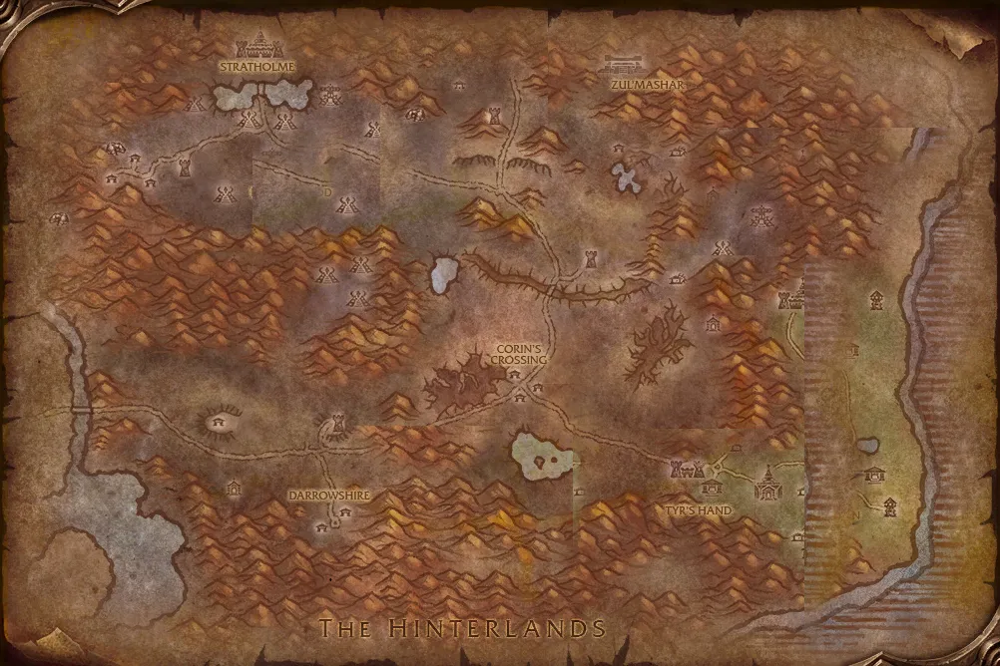

Accès
 Entrée Maleterres de l'Est 26.5, 10.4
Entrée Maleterres de l'Est 26.5, 10.4 5 joueurs · niveaux 58 à 60
5 joueurs · niveaux 58 à 60 16 quêtes · 14 boss
16 quêtes · 14 boss
Le point rouge marque l'entrée du donjon.
Toutes les zones sont sur notre carte interactive.
La ville martyre des Maleterres de l'Est, partagée entre le Fléau du baron Vaillefendre et la Croisade écarlate.
📅 Mise à jour le 4 novembre 2026🛠 Patch 1.60.1.70755

Entrée Maleterres de l'Est 26.5, 10.4 5 joueurs · niveaux 58 à 60 16 quêtes · 14 bossLe point rouge marque l'entrée du donjon.
Toutes les zones sont sur notre carte interactive.
| Objet | Type |
|---|---|
| Etreinte glaciale de Krân | Torse |
| Griffes d'osselets de Krân | Mains |
| Idole glaciale de Krân | Distance |
| Objet | Type |
|---|---|
| Cape du tribunal royal | Dos |
| Poignes de mort | Mains |
| Conciliateur | Deux mains |
| Crispins de magistrat | Poignets |
| Chapeau de feutre cramoisi | Tête |
| Idole de brutalité | Relique |
| Objet | Type |
|---|---|
| Doigt de Banshee | Distance |
| Cafetan fantomatique de la Main froide | Torse |
| Brassards glace-cuir | Poignets |
| Epaulettes du hurlevent | Épaules |
| Toucher de la banshee | Mains |
| Sandales de Brume-funeste | Pieds |
| Héritage d'Anastari | Cou |
| Arc strident | Distance |
| Protège-mains lacés de ténèbres | Mains |
| Objet | Type |
|---|---|
| Carcasse de Nerub'enkan | Bouclier |
| Bottines de Fangdrip | Pieds |
| Jambières des cryptes | Jambes |
| Griffes de la sombre fileuse | Mains |
| Espauliers décorés d'eaux-fortes | Épaules |
| Bottes de bestiaire | Pieds |
| Arbalète en écaille centrale de carapace | Distance |
| Cuissards en plaques chitineuses | Jambes |
| Echarpe de Thuzadin | Taille |
| Objet | Type |
|---|---|
| Crâne des ténèbres ardentes | Main gauche |
| Doigts du sombre lien | Mains |
| Ceinturon ardent | Taille |
| Jambières des flammes | Pieds |
| Brassards du vide ténébreux | Poignets |
| Sandales de dévot | Pieds |
| Cape de la lune blafarde | Dos |
| Bottines de Maleki | Pieds |
| Hachette tranche-os | Une main |
| Objet | Type |
|---|---|
| Baguette de mauvais mojo de Ritssyn | Distance |
| Tunique du croissant de lune | Torse |
| Gantelets d'adresse | Mains |
| Heaume de l'Exécuteur | Tête |
| Mantelet de Thuzadin | Épaules |
| Cape du baron noir | Dos |
| Gantelets dracoriens | Mains |
| Sceau de Rivendare | Doigt |
| Robe de l'exalté | Torse |
| Sceptre de l'Impie | Main droite |
| Déchireuse de Stratholme | Une main |
| Lacéreuse | Une main |
| Kilt des éléments | Jambes |
| Pantalon de bestiaire | Jambes |
| Jambières de magistère | Jambes |
| Pantalon de dévot | Jambes |
| Jambières de Brume-funeste | Jambes |
| Pantalon Sombreruse | Jambes |
| Kilt du Coeur-sauvage | Jambes |
| Jambières de Sancteforge | Jambes |
| Jambières de vaillance | Jambes |
| Objet | Type |
|---|---|
| Chemisette de l'oiseau chanteur | Torse |
| Piccolo des feux ardents | Bijou |
| Jambières du ménestrel | Jambes |
| Ceinturon arc-en-ciel | Taille |
| Bottes de magistère | Pieds |
| Objet | Type |
|---|---|
| Cape de la gargouille peau-de-pierre | Dos |
| Serre de dilacération | Main gauche |
| Bottes verdoyantes | Pieds |
| Objet | Type |
|---|---|
| Bouquet de roses rouges | Main gauche |
| Tome de connaissance | Main gauche |
| Cape d'archiviste | Dos |
| Ceinturon de prévoyance | Taille |
| Gants de dévot | Mains |
| Bottes couvertes de cendres | Pieds |
| Objet | Type |
|---|---|
| Etoile de Mystaria | Cou |
| Fléau démoniaque | Deux mains |
| Epaulières Langue-de-wyrm | Épaules |
| Heaume de tyrannie | Tête |
| Don des magi elfes | Une main |
| Bottines des esprits enflammés | Pieds |
| Bottes de Sancteforge | Pieds |
| Marteau du Grand croisé | Deux mains |
| Heaume du Grand croisé | Tête |
| Voile du Nathrezim | Épaules |
| Objet | Type |
|---|---|
| Chapeau d'hiver rouge | Tête |
| Obusier portatif de Willey | Distance |
| Bottes de maître canonnier | Pieds |
| Messager du boulet de canon | Bijou |
| Spallières Sombreruse | Épaules |
| Ceinturon du barrage | Taille |
| Collier de coquillages nacrés | Cou |
| Gratte-dos de Willey | Main droite |
| Mantelet de la Croisade écarlate | Épaules |
| Rédemption | Deux mains |
| Casque de la nouvelle lune | Tête |
| Objet | Type |
|---|---|
| Bâton de Balzaphon | Deux mains |
| Chaînes de la liche | Cou |
| Baudrier de Balzaphon | Taille |
| Objet | Type |
|---|---|
| Amulette du Racheté | Cou |
| Sceptre de focalisation interminable | Main gauche |
| Anneau de guérison | Doigt |
| Objet | Type |
|---|---|
| Robe Tisse-fer | Torse |
| Cuissards de vigilance | Jambes |
Butin d'après les données de WoW Classic : Forever a ajouté de nouveaux objets dans les donjons, la liste sera complétée en jeu. Seuls les objets de qualité inhabituelle et mieux sont listés. Passe la souris sur un objet pour voir ses caractéristiques (info-bulle Wowhead), ou clique pour ouvrir sa fiche.
Donnée par : Duc Nicholas Zverenhoff (Maleterres de l'Est)
Donnée par : Artiste Renfray (Maleterres de l'Ouest)
Donnée par : Betina Bigglezink (Maleterres de l'Est)
Récompense : Sceau de l'Aube · Rune de l'Aube
Donnée par : Duc Nicholas Zverenhoff (Maleterres de l'Est)
Donnée par : Aurius (Stratholme)
Récompense : Volonté du Martyr · Sang du Martyr
Donnée par : Betina Bigglezink (Maleterres de l'Est)
Donnée par : Anthion Harmon (Maleterres de l'Est)
Récompense : Sacoche d'Ysida
Donnée par : en ramassant Tête de Balnazzar
Donnée par : Leonid Barthalomew le Révéré (Maleterres de l'Est)
Donnée par : Smokey LaRue (Maleterres de l'Est)
Récompense : Briquet de Smokey
Donnée par : Bodley ()
Donnée par : Bodley ()
Donnée par : Aurius (Stratholme)
Donnée par : Leonid Barthalomew le Révéré (Maleterres de l'Est)
Récompense : Potion de soins excellente · Potion de mana supérieure · Couronne du pénitent · Anneau du pénitent
Donnée par : Nathanos le Flétrisseur (Maleterres de l'Est)
Récompense : Cercle élémentaire · Sceau royal d'Alexis
Donnée par : Egan (Maleterres de l'Est)
Noms des quêtes, des PNJ et des objets d'après les données du jeu (Polestar, CC BY 4.0, et Factoruide/Questie).